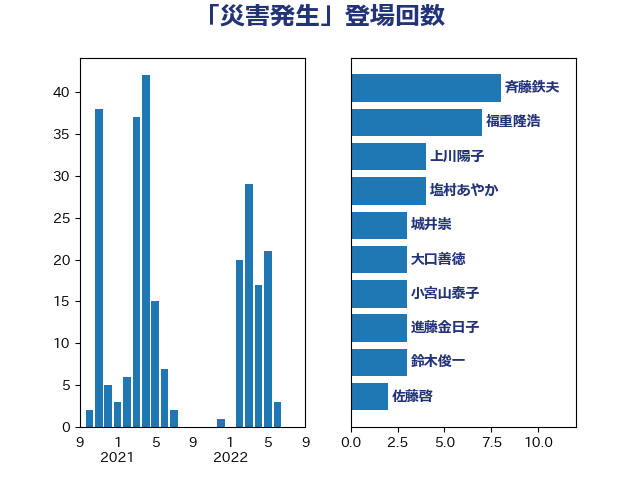

単語「災害発生」

| 斉藤鉄夫 | 公明党 | 8 回 |
| 福重隆浩 | 公明党 | 7 回 |
| 上川陽子 | 自由民主党 | 4 回 |
| 塩村あやか | 立憲民主党 | 4 回 |
| 城井崇 | 立憲民主党 | 3 回 |
| 大口善徳 | 公明党 | 3 回 |
| 小宮山泰子 | 立憲民主党 | 3 回 |
| 進藤金日子 | 自由民主党 | 3 回 |
| 鈴木俊一 | 自由民主党 | 3 回 |
| 佐藤啓 | 自由民主党 | 2 回 |
| 佐藤英道 | 公明党 | 2 回 |
| 古川禎久 | 自由民主党 | 2 回 |
| 堀井巌 | 自由民主党 | 2 回 |
| 新谷正義 | 自由民主党 | 2 回 |
| 杉久武 | 公明党 | 2 回 |
| 根本幸典 | 自由民主党 | 2 回 |
| 梶山弘志 | 自由民主党 | 2 回 |
| 渡辺猛之 | 自由民主党 | 2 回 |
| 田名部匡代 | 立憲民主党 | 2 回 |
| 若松謙維 | 公明党 | 2 回 |
| 菅義偉 | 自由民主党 | 2 回 |
| 足立康史 | 日本維新の会 | 2 回 |
| 金子恭之 | 自由民主党 | 2 回 |
| あかま二郎 | 自由民主党 | 1 回 |
| こやり隆史 | 自由民主党 | 1 回 |
| 三浦信祐 | 公明党 | 1 回 |
| 中村裕之 | 自由民主党 | 1 回 |
| 中西祐介 | 自由民主党 | 1 回 |
| 今井絵理子 | 自由民主党 | 1 回 |
| 伊藤俊輔 | 立憲民主党 | 1 回 |
| 加田裕之 | 自由民主党 | 1 回 |
| 勝俣孝明 | 自由民主党 | 1 回 |
| 坂本哲志 | 自由民主党 | 1 回 |
| 塩川鉄也 | 日本共産党 | 1 回 |
| 塩田博昭 | 公明党 | 1 回 |
| 大野敬太郎 | 自由民主党 | 1 回 |
| 大野泰正 | 自由民主党 | 1 回 |
| 室井邦彦 | 日本維新の会 | 1 回 |
| 小寺裕雄 | 自由民主党 | 1 回 |
| 小沢雅仁 | 立憲民主党 | 1 回 |
| 小沼巧 | 立憲民主党 | 1 回 |
| 小里泰弘 | 自由民主党 | 1 回 |
| 山口那津男 | 公明党 | 1 回 |
| 岸信夫 | 自由民主党 | 1 回 |
| 後藤茂之 | 自由民主党 | 1 回 |
| 徳永エリ | 立憲民主党 | 1 回 |
| 新藤義孝 | 自由民主党 | 1 回 |
| 朝日健太郎 | 自由民主党 | 1 回 |
| 松本尚 | 自由民主党 | 1 回 |
| 森まさこ | 自由民主党 | 1 回 |
| 櫻田義孝 | 自由民主党 | 1 回 |
| 田村憲久 | 自由民主党 | 1 回 |
| 盛山正仁 | 自由民主党 | 1 回 |
| 神津たけし | 立憲民主党 | 1 回 |
| 福島伸享 | 無所属 | 1 回 |
| 竹内真二 | 公明党 | 1 回 |
| 簗和生 | 自由民主党 | 1 回 |
| 美延映夫 | 日本維新の会 | 1 回 |
| 羽田次郎 | 立憲民主党 | 1 回 |
| 芳賀道也 | 国民民主党 | 1 回 |
| 菊田真紀子 | 立憲民主党 | 1 回 |
| 萩生田光一 | 自由民主党 | 1 回 |
| 落合貴之 | 立憲民主党 | 1 回 |
| 西田昭二 | 自由民主党 | 1 回 |
| 豊田俊郎 | 自由民主党 | 1 回 |
| 赤羽一嘉 | 公明党 | 1 回 |
| 足立敏之 | 自由民主党 | 1 回 |
| 青山大人 | 立憲民主党 | 1 回 |